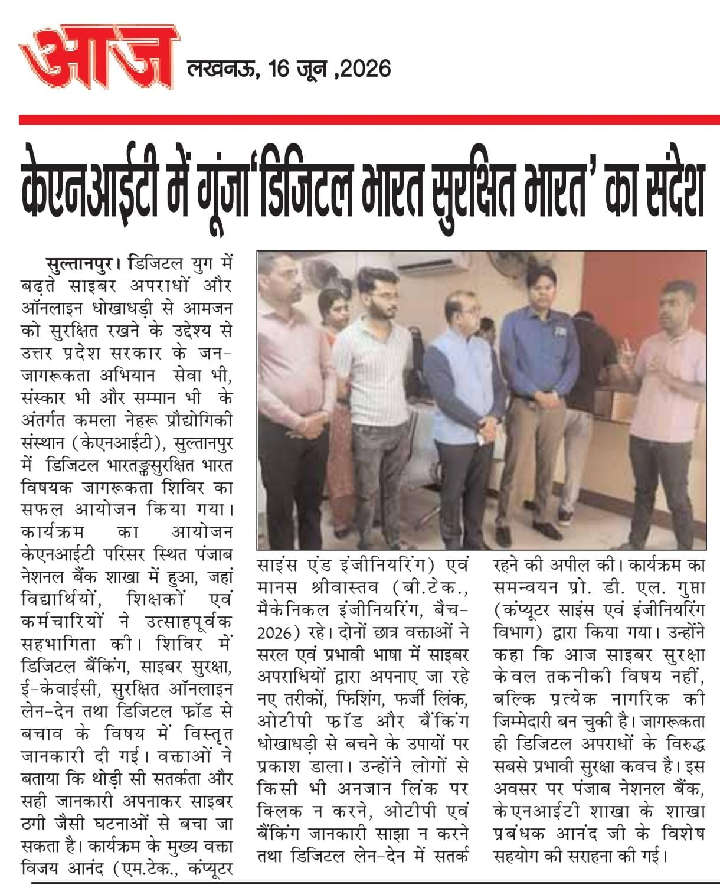
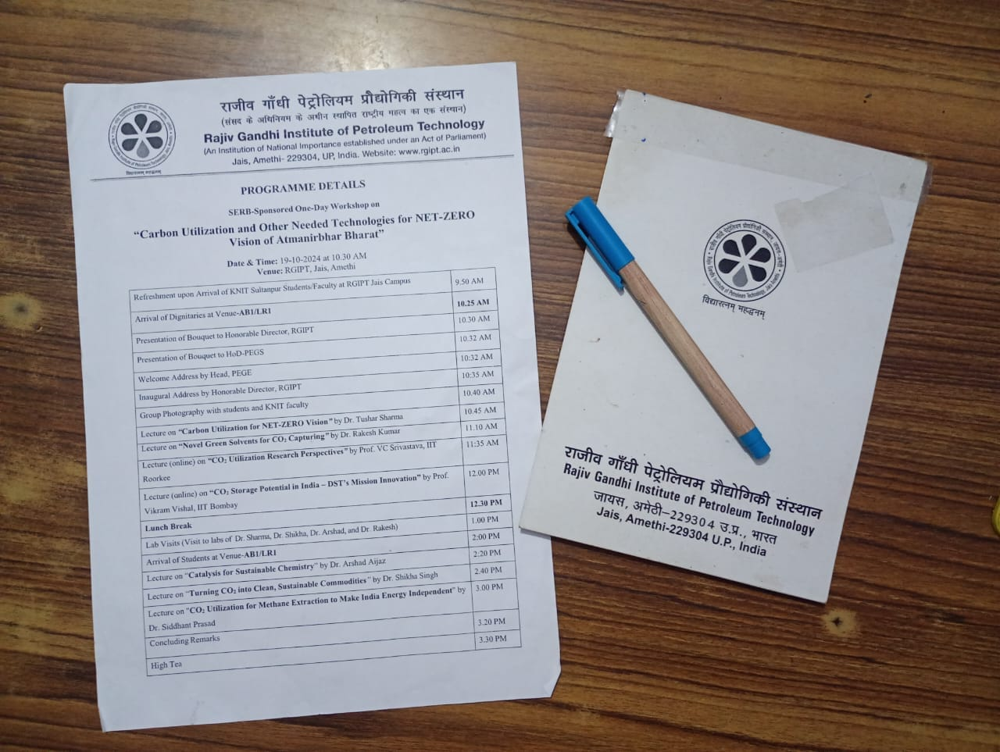

Manas Srivastava
Building analytics systems that drive business decisions
I’m interested in the space between curiosity and creation. I ask questions, explore ideas, and build things that turn possibilities into something valuable.
| field | value |
|---|---|
| records_analyzed | 700,000+ |
| peak_model_accuracy | 95% |
| codevita_rank | Top 0.9% Global |
| hackathon | Walmart Sparkathon Awardee |
| program | McKinsey Forward |
| linkedin_network | 1.6K+ |
profile
About
I'm a Data Analyst specializing in analytics engineering and applied AI — I combine data, analytics, and machine learning to solve real business problems. My work spans SQL, Python, and Machine Learning, from exploratory analysis and predictive modeling to business reporting and AI-powered analytics automation that stakeholders can act on.
I've analyzed 700,000+ records, pushed model accuracy as high as 95%, ranked in the top 0.9% among 537,000+ participants at TCS CodeVita, and was selected for the McKinsey Forward Program. I hold a completed Engineering from KNIT Sultanpur, and I've been working as a freelance Data Analyst — building AI-powered analytics automation — since January 2026.
now
Currently Working On
skills
Technical Skills
programming
data engineering
analytics
bi & visualisation
machine learning
ai
cloud
experience
Work Experience
- Delivered end-to-end Data Analysis, AI, and Web Development solutions for 3 clients, transforming business requirements into practical, production-ready outcomes.
- Built AI-powered analytics automation agents that reduced repetitive reporting and data-cleaning effort through intelligent workflow automation.
- Owned complete client engagements independently—from requirement scoping and data analysis to solution delivery, deployment, and iteration based on client feedback.
- Built and maintained an Excel-based tracker for 500+ TPO, improving outreach tracking and registration pipeline visibility.
- Standardized institution records and tracked outreach activities, improving data accuracy and institutional engagement monitoring.
- Recommended a resume review initiative to strengthen the programme's value proposition and support student career development.
- Developed predictive models for performance metrics (sales, churn rate, etc.) using regression and ensemble techniques, achieving 86.70% and 83.6% accuracy respectively.
- Performed data preprocessing by handling 15% missing values through imputation and feature engineering, improving dataset reliability by 7%.
- Supported data validation, cleaning, and preparation workflows, ensuring analysis-ready datasets for model development and evaluation.
projects
Projects

Companies need clear insight into hiring demand, in-demand skills, and regional employment trends buried across 700K+ raw job postings.
Analyzed the postings with SQL (CTEs, joins, window functions) and wrote reusable scripts to automate data prep, then built an interactive Power BI dashboard for salary, hiring, and skill-demand trends.
Cut manual analysis time by 30% and gave stakeholders a self-serve view of hiring trends.

Measuring Wear Rate and Coefficient of Friction (COF) for Cu–Gr–TiC composites through lab testing is slow and expensive.
Built an ML framework comparing ANN, Random Forest, SVR, and KNN models to predict Wear Rate and COF, then identified Applied Load as the most influential parameter.
Achieved up to R² = 0.96 (COF) and R² = 0.89 (Wear Rate), reducing dependence on costly lab experiments and pinpointing optimal conditions (30N load, 8000m distance, 4.5 wt.% TiC).

13,000+ SaaS subscription records with 5%+ missing values made it hard to forecast churn, revenue, and usage patterns manually.
Built an end-to-end ML pipeline: cleaned the data into a modeling-ready dataset, engineered 10+ business features, ran 20+ exploratory visualizations, and trained Linear Regression and Decision Tree Regressor models (R², MAE, MSE, RMSE) to forecast subscription duration and revenue.
Automated ~90% of manual analysis steps.

Emotional and psychological wellbeing patterns were scattered across raw survey data with no clear, data-backed way to surface them.
Cleaned and explored a mental-health and wellbeing dataset, then prototyped a smart digital wellness concept for instant, personalized guidance.
Surfaced actionable, data-backed wellbeing insights that could inform a personalized guidance product.
experiments
Experiments
A small, lighthearted project that serves a random joke from a curated collection on each run — built to experiment with content randomization logic.
achievements
Achievements


media & workshops
Media & Workshops


github
GitHub Activity
Git is just a way to save snapshots of your code as you work, so you can always go back if something breaks. GitHub is where those snapshots live online — a shared home for the project that anyone on the team can pull from.
The everyday flow is simple: you commit small, meaningful changes with a clear message, work on a separate branch so the main code stays stable, and open a pull request when it's ready for someone to review before it gets merged in.
The habits that matter most: commit often, write messages that explain why not just what, keep a clean .gitignore, and read the diff before you push. Small, honest history beats one giant commit every time.
volunteering
Volunteering & Leadership
education
Education
Completed a one-month industrial training in the Maintenance department, gaining hands-on exposure to the complete sugarcane-to-sugar production cycle at the mill.
certifications
Certifications


credibility
Mentors & Collaborators
Guided a sales-data-analyst internship — building a baseline ML model to predict performance metrics, with daily work in data validation and interpretation.
Supervised the final-year Cu–Gr–TiC composites project — verifying experimental vs. predicted results, comparing models (including feature importance) to close gaps, and optimizing for future work. The findings were appreciated by both examiners.
Oversaw a Founder's Office internship spanning the full range of the work — from outreach and database management in Excel to strategy design and service implementation.
online presence
The Timeless Analyst
My personal brand, built in public across Substack, X, and YouTube — projects, learnings, and work in progress.